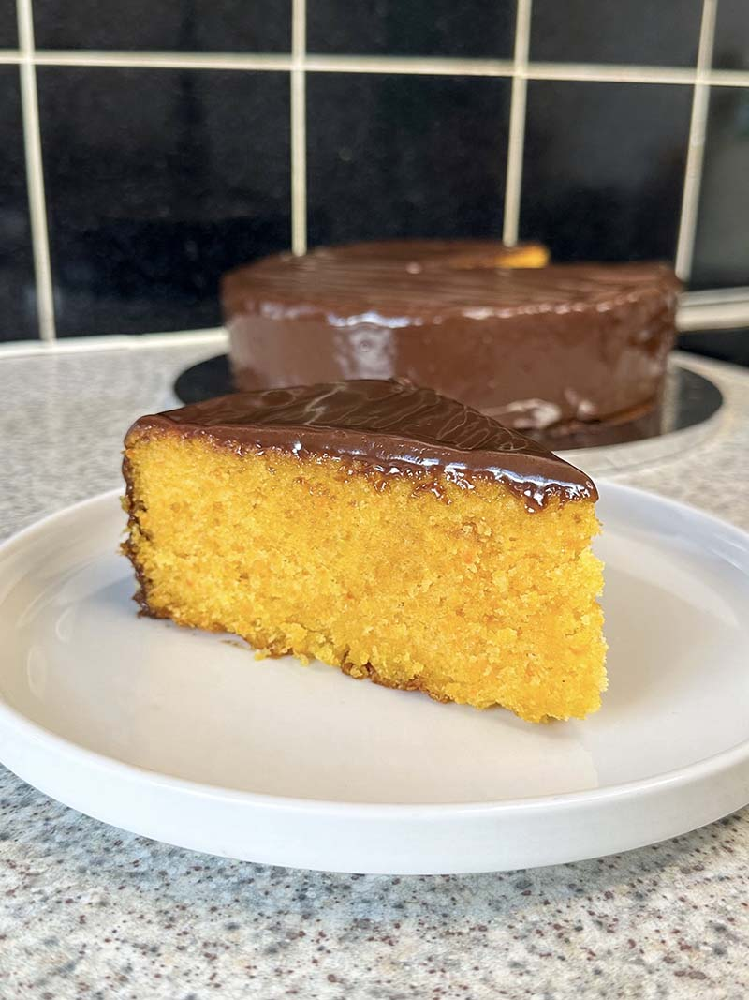

A cake so good it's a national symbol.
This cake surpasses american carrot cakes in both ease of technique and flavor. The carrots are blended in the batter instead of shredded, there are no nuts, raisins or spices to steal the show and the brigadeiro is just the perfect compliment to the carrot flavor.
Originally at: Ash Baber